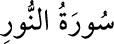

<a name=5517></a><br/>
<b>24-NÛR SÛRESİ</b><br/>
<i><b>64 âyettir. Medine’de nâzil olmuştur. “Nûr âyeti” diye bilinen 35. âyette Allah’ın,</b></i><br/>
<i><b>gökleri ve yeri aydınlatan nûrundan bahsedildiği için “Nûr sûresi” adını almıştır.</b></i><br/>
